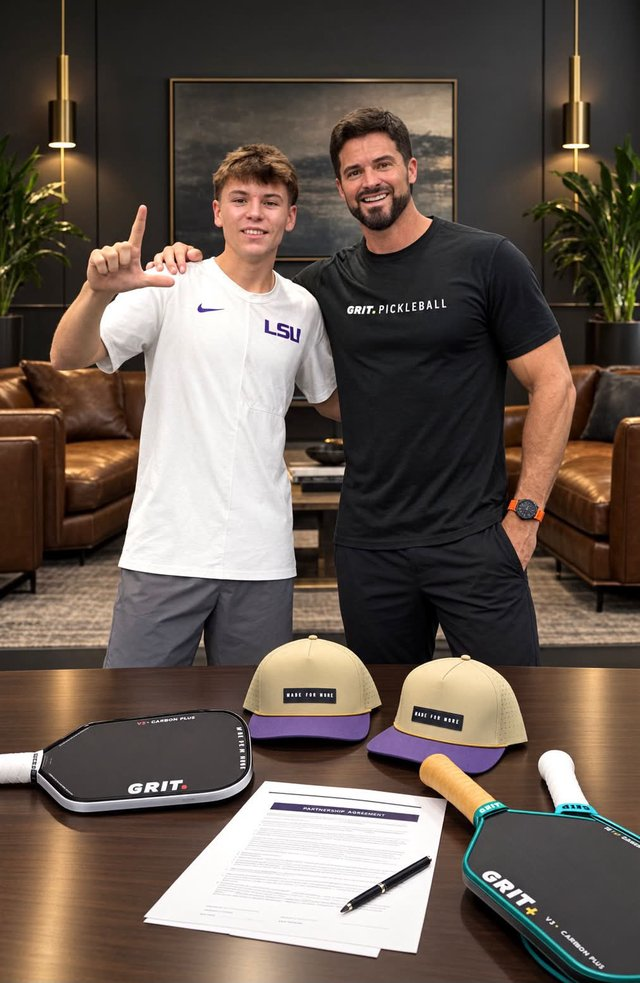
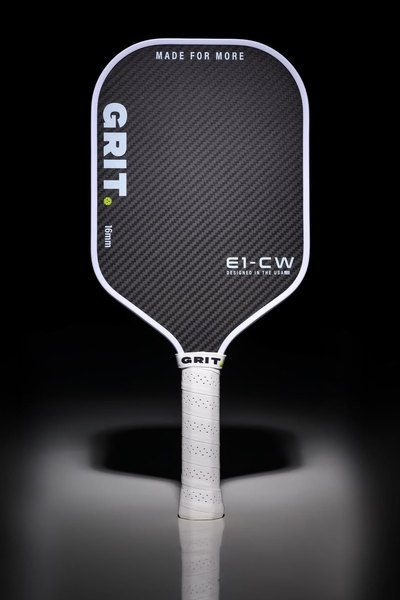

The most passionate owners in pickleball.
That's our take on GRIT. PICKLEBALL, a paddle brand born in Baton Rouge, Louisiana. We've X-rayed, scoped and spin-tested their paddles, and the numbers hold up.

PBRXShop Grit →

Their story
In Grit's own words, the brand "was born in Baton Rouge, Louisiana" and started with "a simple belief: that the players who grind the hardest, compete the smartest" deserve equipment built to match their drive. Their paddles are designed in Baton Rouge, and every one says "Made for more" on the face.
Source: Grit's About page.
The paddles we've tested
Product photos supplied to Pickleball RX. Grit makes more models than these. See the full lineup on grit-shop.com.
E2-CF
USAP approved16 mm flex-foam paddle. Comes in several colorways, including the green Launch Edition, pink and white.

E1-CW
Not USAP approved16 mm, elongated, with a tight plain carbon weave under a thin glossy coat. Made for recreational play.

E1-TW
Not USAP approved16 mm, elongated. The same carbon weave with titanium strands woven through it in a grid. Made for recreational play.
Grit E1-CW and E1-TW are recreational-play paddles that are not USA Pickleball approved.
What our labs found
Top of our spin chart
The E1-TW and E1-CW hold the two highest spin averages we've recorded on our rig. They're not USAP approved, so we show them for reference.
See spin results →Spin that lasts
We re-tested the E2-CF after 2 weeks, 50+ hours of play. Verdict: no loss, about 2,020 RPM on the used paddle.
See durability →E2-CF X-ray
See inside the E2-CF: core, perimeter ring and handle, labeled from the X-ray.
See inside →Under the microscope
E1-CW versus E1-TW at the L and M lenses: plain carbon weave versus a titanium grid.
See the grit →